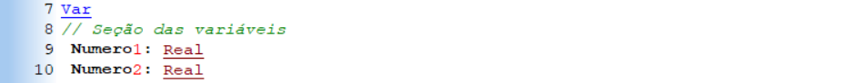
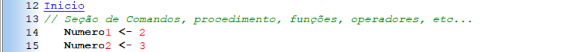
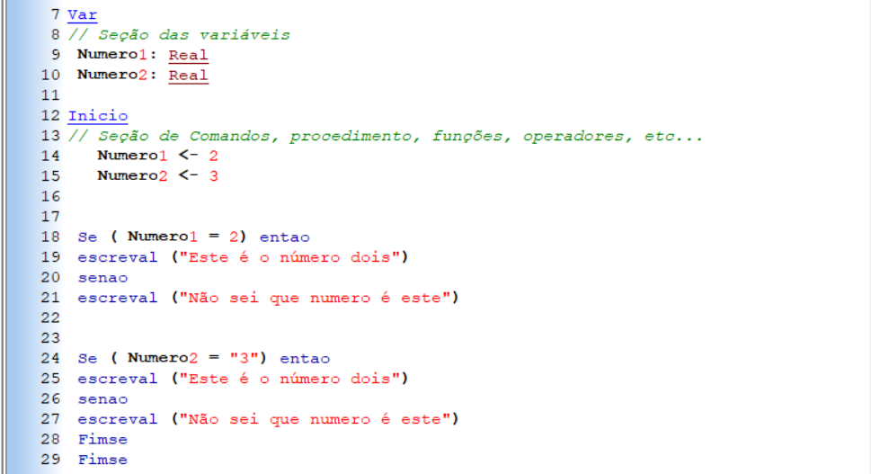

A busca por conhecimento em algoritmo e lógica de programação tem crescido significativamente. Esses são temas essenciais em áreas em expansão, oferecendo vastas oportunidades para quem os domina. Computadores não interpretam comandos subjetivos, o que torna a lógica de programação e os algoritmos fundamentais para uma comunicação eficaz com as máquinas. Enquanto a lógica de programação estabelece a estrutura de conceitos e regras para a execução, o algoritmo é a sequência de comandos claros e lógicos que guiam a resolução de problemas ou o alcance de objetivos. Compreender esses conceitos é crucial para desenvolver o raciocínio lógico, indispensável no ambiente tecnológico. Algoritmos são comumente implementados em diversas linguagens de programação, como JavaScript, Java e Python. Apesar das variações de sintaxe entre elas, a lógica permanece mesma, por isso a importância de aprender-la.
O que é um Algoritmo ?
Algoritmo é um conjunto de passos ordenados para realizar uma tarefa ou resolver um problema. Ele pode ser representado de várias formas, como fluxogramas, pseudocódigo e código em uma linguagem de programação. A clareza e a ordem dos passos são fundamentais para que o computador possa interpretar e executar corretamente.
O que é a logica de programação ?
A lógica de programação é o raciocínio que usamos para criar sequências de instruções que o computador pode seguir para executar uma tarefa. Para entender isso de forma prática, pense em uma ação simples, como ligar o chuveiro. Esse é o objetivo (o "algoritmo"). O que precisamos é criar um passo a passo claro para que o sistema saiba como executar essa tarefa. Supondo que o sistema já saiba se movimentar, o processo seria:
- Selecionar a Temperatura Desejada
- Abrir o Registro de Água
- Conferir se está quente
- Está Ligado!
Esses passos podem ser representados de diversas formas, como:
- - Fluxogramas (diagramas com símbolos visuais)
- - Pseudocódigo (descrições escritas que simulam a lógica de um código real)
- - Código-fonte (como o que estamos utilizando no VisualG)
Variáveis
Variáveis são como “caixinhas” que guardam valores. Esses valores podem mudar ao longo do tempo, conforme o programa executa.
Também existem Constantes são diferentes das variáveis: seus valores não mudam durante a execução do programa. Usamos constantes para informações fixas, como um texto.
Tipos de dados:
- Inteiro - Números sem casas decimais (ex: 2, 15, -4)
- Real - Números com casas decimais (ex: 3.14, 9.8)
- Caractere - Letras, símbolos ou textos (ex: "Olá")
No exemplo abaixo, as variáveis foram declaradas como Real, ou seja, estão preparadas para armazenar números reais (com ou sem casas decimais). Esses valores são utilizados em operações matemáticas como somas, subtrações, multiplicações e divisões. Se o objetivo fosse armazenar letras ou números como texto (sem fazer contas), o tipo Caractere seria o mais adequado. E se você quisesse limitar os valores apenas a números inteiros (sem casas decimais), o tipo seria Inteiro, seguindo os conjuntos numéricos.
Observe o Exemplo -
Minhas Variaveis:
Valores
⏺︎ O que quer dizer isso ?
As variaveis são Numero1 e Numero2, que podem mudar, e por isso ficam na seção de variaveis. Na proxima seçao está o valor que será atribuido a elas, que no caso foi 2 e 3. esses valores podem ser utilizados para diversas coisas, como fazer contas matematicas.
Entrada | Saida | Processo
Além da sequência de ações, a programação envolve os conceitos de Entrada e Saída de dados. Observe:
Entrada ➡︎
É tudo o que o sistema precisa saber antes de executar algo. Observe neste exemplo:
- Minhas Variaveis ↓
- • Numero1 = 2
- • Numero2 = 3
Processo ➡︎
Todos os processos, que você executa e o sistema também, que vai resultar na saída
- - Executar o programa
- - Selecionar operação
- - (Sistema realiza a operação necessaria)
Saída ➡︎
- ▶︎ Resultado final da operação feita com os dados fornecidos.
SE | SENÃO | ENTÃO
As estruturas SE, SENÃO e ENTÃO são elementos muito importantes na programação, pois permitem a implementação de condições para executar uma açao. Elas funcionam como "decisões" dentro do código. Com elas, podemos dizer ao programa: “Se algo acontecer, faça isso. Senão, faça outra coisa.”
Observe o exemplo a seguir, mantendo a lógica do programa entre numeros:
Exemplo -
⏺︎ Oque isso quer dizer isso ?
O codigo diz para o computador que SE o Numero for igual à 2 ENTAO ele irá escrever para o usuário que "o número é dois" e SENãO for 2, ele irá dizer que não sabe que número é aquele. O mesmo acontece na segunda parte.
- • O comando "Escreval" diz para o computador que ele deve escrever algo
- • A cada SE é necessario um fimse correspondente para determinar onde ele termina, e por isso existem dois deles no fim do código